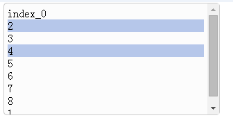

listctrl
dark.ui.listctrl.css dark.ui.listctrl.js 一個listctrl 
方法
//創建列表實例
listctrl.create = function(_param)
_param 取值
{"element":$("#select") //被替換為listctrl的jquery元素 若不傳入 需要手動將listctrl添加到頁面
,"multiple":"multiple" //是否可多選
,"click_item":function(e,element){ //單擊 item 觸發
alert(element.text());
}
,"change_item":function(){ //item 選項改變 觸發
alert("change")
}
}
//listctrl 的jquery元素實例
instance.jQuery
//返回 item 數量
instance.size = function()
//清空列表
instance.clear = function()
//根據索引 刪除元素 erase(0,1,2...)
instance.erase = function()
//插入元素
instance.insert = function(_where/*-1 最後*/,_value/*值*/,_text/*顯示文本 默認=_value*/)
//返回/設置 高度
instance.height = function(_height)
//返回/設置 寬度
instance.width = function(_width)
//返回(無參)/選中(根據索引 (0,1,2,...)) 指定項
instance.select = function()
example
html ... <script language="javascript" src="scripts/jquery-1.8.3.min.js"<>/script> <script language="javascript" src="ui/dark.core.js"<>/script> <link href="ui/dark.ui.listctrl.css" rel="stylesheet" type="text/css" /> <script language="javascript" src="ui/dark.ui.listctrl.js"<>/script> <script language="javascript" src="scripts/main.js"<>/script> ... <select id="select"> <option selected='selected' value="kk">index_0</option> <option>1</option> <option selected='selected'>2</option> <option>31</option> <option>4</option> <option>5</option> <option>6</option> <option>7</option> <option>8</option> <option>9</option> <option>10</option> </select> ... main.js $(document).ready(function(){ var listctrl = dark_namespace("dark.ui.listctrl"); listctrl = listctrl.create( {"element":$("#select") //被替換為listctrl的元素 ,"multiple":"multiple" //使用 多項 選擇 ,"click_item":function(e,element){ //單擊 item alert(element.text()); } ,"change_item":function(){ //改變選項 alert("change") } } ); listctrl.erase(1); listctrl.height(150); listctrl.width(300); listctrl.insert(-1,1); listctrl.select(1,2,3); listctrl.select().each(function(index, element) { var e = $(element); alert("index = " + e.index() + "\n" + "val = " + e.attr("data-value") + "\n" + "text = " + e.text() + "\n" ); }); });